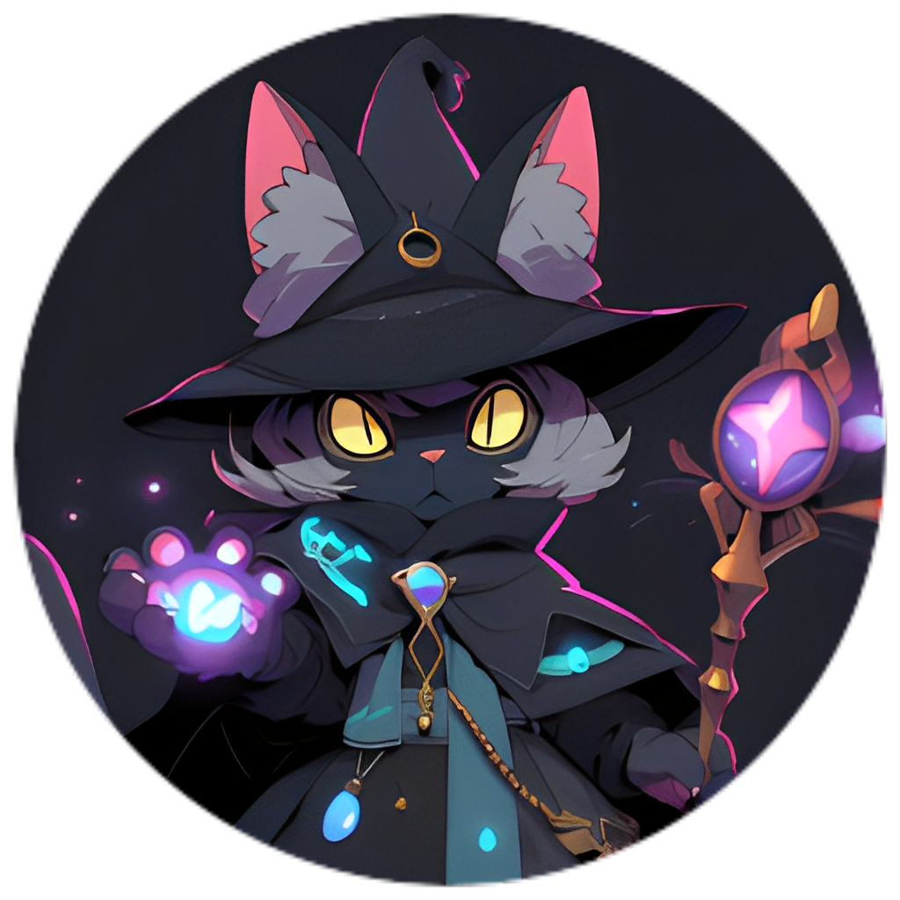

Encantada Bot
Deixe seu servidor mais animado
Desculpe se você acessou agora o site, nosso bot ainda está em processo de desenvolvimento ou está passando por alguma manutenção :c logo logo estará disponível novamente! por enquanto, ler um livro não seria má ideia

Afinal, O que você pode fazer?
1 - Você pode ouvir músicas em seu servidor! O bot permite que músicas do youtube possam ser reproduzidas
2 - E que tal moderar servidores? Funções completas para gerenciar e administrar servidores
3 - Se divirta com os minigames feitos para diversão. Alguns joguinhos estão presentes para você passar o tempo